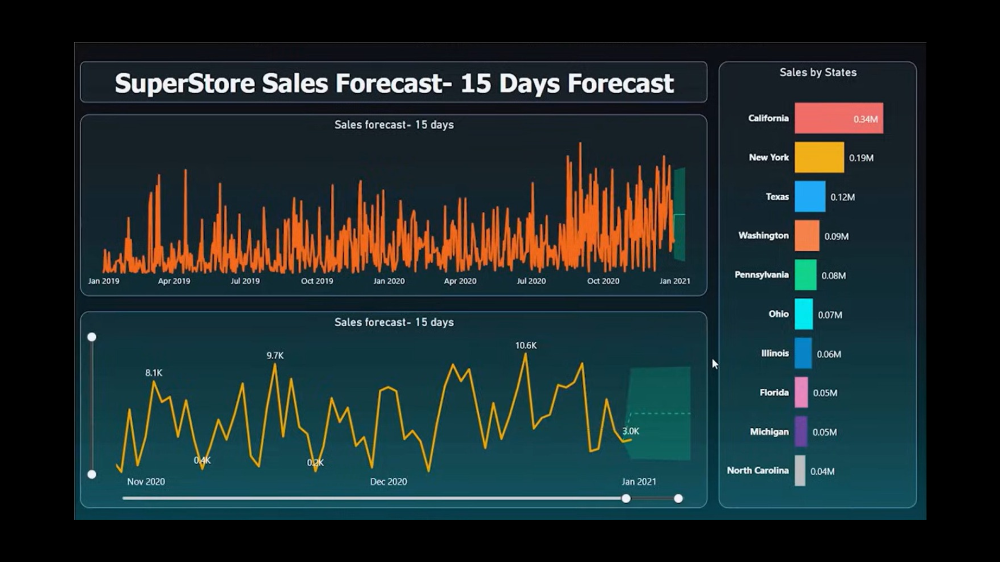

The project centers around comprehensive data analysis and visualization using Power BI, a powerful business analytics tool that turns raw data into meaningful insights through interactive charts and graphs. The primary focus is on an online store, analyzing various segments such as orders, sales, profit, and shipping days. By systematically organizing the sales data according to different parameters like payment mode, region, segment, subcategory, month, and shipping mode, the project aims to provide a granular view of the store's performance. This segmentation is crucial as it helps in understanding the intricate details of the business operations and customer behavior, enabling targeted strategies for improvement and growth.
Using Power BI, the project transforms this segmented data into visually appealing and easy-to-understand charts, line graphs, and bar graphs. These visualizations make it simpler to identify trends, patterns, and anomalies within the data. For example, line graphs can illustrate sales trends over time, bar graphs can compare sales performance across different regions, and pie charts can show the distribution of sales by payment mode or product category. The integration of Microsoft Bing for geographical data representation adds another layer of depth, allowing for the visualization of sales performance across different geographical regions. This geographic analysis can highlight regional variations in sales, helping to pinpoint areas with high demand and those that might need more targeted marketing efforts.
Additionally, one of the significant advantages of using Power BI in this project is its capability to forecast future sales and predict demand in specific regions. By leveraging historical data and advanced analytics, the dashboard can provide predictive insights that are invaluable for strategic planning and resource allocation. For instance, if the data indicates a rising trend in demand for a particular product in a specific region, the company can ensure that inventory levels are adjusted accordingly to meet the anticipated demand. This foresight helps in minimizing stockouts and overstock situations, optimizing supply chain operations, and enhancing customer satisfaction. Overall, the project's detailed data analysis and visualization facilitate better decision-making, enabling the online store to operate more efficiently and strategically.